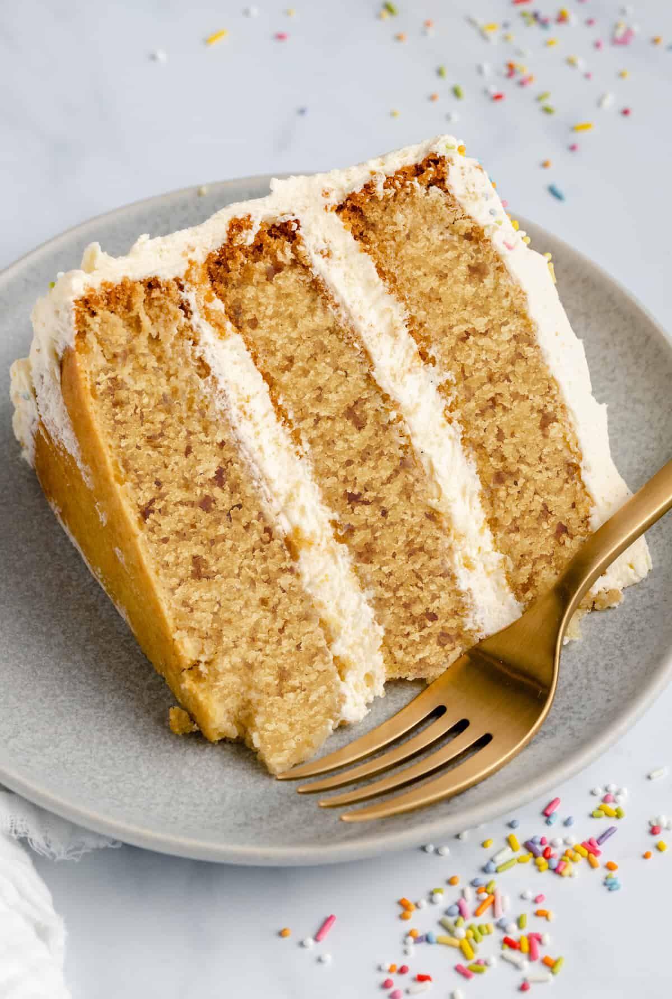

Vegan Cake

Description
Indulge in the delightful world of vegan baking with this scrumptious vegan cake. This cake is a true celebration of plant-based ingredients and flavors. Each moist and fluffy slice is infused with a symphony of natural sweetness and aromatic hints. Made with wholesome vegan substitutes, this cake is free of eggs, dairy, and any animal-derived products. It's a guilt-free treat that can be enjoyed by everyone, regardless of dietary preferences. From birthdays to special occasions, this vegan cake will steal the spotlight and leave your taste buds singing with joy.
Get ready to embark on a delightful baking adventure that showcases the versatility of vegan ingredients. With simple pantry staples and a touch of creativity, you'll create a cake that's not only visually stunning but also incredibly delicious. So gather your ingredients, preheat your oven, and let the magic of vegan baking unfold.
Ingredients
- 2 ½ cups all-purpose flour
- 1 ½ cups granulated sugar
- 1 teaspoon baking soda
- ½ teaspoon salt
- ½ cup vegetable oil
- 2 cups unsweetened almond milk (or any plant-based milk)
- 2 tablespoons apple cider vinegar
- 2 teaspoons vanilla extract
Steps
- Preheat your oven to 350°F (175°C). Grease and flour a cake pan.
- In a large mixing bowl, whisk together the flour, sugar, baking soda, and salt.
- In a separate bowl, combine the vegetable oil, almond milk, apple cider vinegar, and vanilla extract. Stir until well combined.
- Pour the wet ingredients into the dry ingredients and mix until the batter is smooth and well combined.
- Transfer the batter into the prepared cake pan and smooth the top with a spatula.
- Bake in the preheated oven for 30-35 minutes, or until a toothpick inserted into the center comes out clean.
- Remove the cake from the oven and let it cool in the pan for 10 minutes. Then, transfer the cake to a wire rack to cool completely.
- Once the cake has cooled, you can frost it with your favorite vegan frosting or decorate it as desired.
- Slice, serve, and enjoy the delightful flavors of this vegan cake!